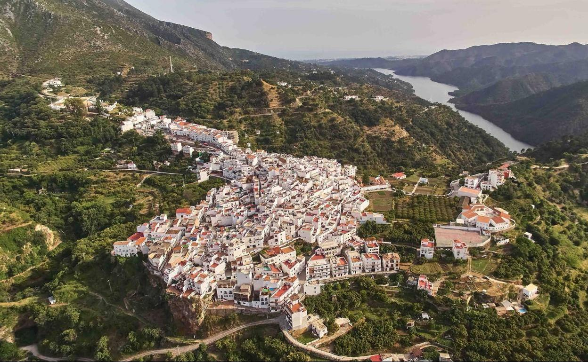

Istán es un pueblo que se encuentra entre Sierra Blanca y Sierra Real. Una de sus mayores características es la presencia de agua en cada uno de sus rincones.
Entre sus muchos emplazamientos históricos podemos destacar las acequias moriscas y por supuesto,
la Torre de Escalante, encalve decisivo durante la rebelión morisca del siglo XVI.

FIESTAS POPULARES Y TRADICIONES
Tiene varias fiestas tradicionales entre ellas la Feria, que se celebra la última semana de septiembre.
Otra de las más curiosas se celebra durante la Semana Santa. Estamos hablando de "El Paso".
La primera representación data del siglo XVIII; se realizó de manera ininterrumpida hasta el comienzo de la Guerra Civil en 1936.
Se recupera en los años 80 y continua en la actualidad.
Página Principal
El Paso